Kria™ KR260 Robotics Starter Kit
|
Setting up the Board and Application Deployment |
Board Setup and Application Deployment¶
Overview of updates¶
Optional feature to Enable Frame Packet preemption
Enablement to use another machine as a CNC to set QBV schedule and FDB Cam entries onto the 2 KR260/KD240 Nodes
Introduction¶
This document shows how to set up the board and run the TSN ROS application.
Pre-requisite¶
Hardware Requirements¶
Two Kria SOM starter kits which can be two KR260 Robotics Starter Kit or two KD240 Drive Starter Kits, or one KR260 and one KD240
Two KR260 Power Supply & Adapter or two KD240 Power Supply & Adapter
Cat 5e Ethernet Cable
USB-A to micro-B Cable
16GB MicroSD Cards
CNC - Optional (KV260/KR260/KD240 or Linux Running Standalone machine)
Ethernet Switch - Optional
Digilent TPH2 Pmod - 12-pin Test Point Header - Optional (Sold Separately)
I210-T1 Network Adapter installed on a PC host machine - Optional (Sold Separately)
Oscilloscope or Analog Discovery 2 – Minimum 100MS/s USB Oscilloscope - Optional (Sold Separately)
RS485 Modbus Temperature Humidity Sensor - Optional (Sold Separately here or here)
Digilent RS485 Pmod - High-speed Isolated Communications - Optional (Sold Separately here)
12VDC Power Supply with Prototyping or Bare Terminals – Optional (Sold Separately)
Wireshark tools installed on host machine (Ubuntu 20.04 Linux used for documentation)
NOTE: This tutorial can be run with one KD240 and one KR260 configuration as well
Tested Artifacts¶
Testing was performed with the following artifacts:
KD240 platform artifacts¶
| Component | Version |
|---|---|
| Boot Firmware | K24-BootFW-01.00.bin |
| Linux Kernel | 5.15.0-9002 |
| xlnx-firmware-kd240-motor-ctrl-qei | 0.10.1-0xlnx1 |
KR260 platform artifacts¶
| Component | Version |
|---|---|
| Boot Firmware | BOOT_xilinx-k26-starterkit-v2022.1-09152304_update3.BIN |
| Linux Kernel | 5.15.0-1023 |
| xlnx-firmware-kr260-tsn-rs485pmod | 0.10.1-0xlnx1 |
Please refer to the Kria Wiki to obtain latest linux image and boot firmware.
Application packages¶
| Package | Version |
|---|---|
| xlnx-tsn-utils | 0.3-0xlnx1 |
| xlnx-app-kr260-tsn-examples | 0.2-0xlnx2 |
| xlnx-app-kr260-pmod-rs485-test | 0.1-0xlnx1 |
| ros-humble-xlnx-pubsub | 0.1.0-0jammy |
| ethtool | 1:5.16+tsn-qbr-0ubuntu1xlnx1 |
| lldpad | 1.1+tsn-qbr-0ubuntu1xlnx2 |
Initial Setup¶
Go through the minimum setup required to boot Linux before continuing with instructions in this page:
Get the latest TSN-ROS application and firmware package:
Search the package feed for packages compatible with KR260.
sudo xmutil getpkgs
An example output is shown below:
Searching package feed for packages compatible with: kr260 xlnx-app-kr260-mv-defect-detect/jammy 0.0.20220621.4729324-0xlnx3 arm64 demo application for Xilinx boards - kr260 mv-defect-detect application xlnx-app-kr260-pmod-rs485-test/jammy 0.1-0xlnx1 arm64 demo application for Xilinx boards - kr260 pmod-rs485-test application xlnx-app-kr260-tsn-examples/jammy 0.1-0xlnx1 arm64
NOTE: There are no dedicated packages for KD240, the same TSN packages can be used as for KR260
Install the AMD demo application packages and dependencies for ROS-TSN.
Install firmware binaries and restart dfx-mgr.
sudo apt install -y xlnx-firmware-kr260-tsn-rs485pmod //KR260 sudo apt install -y xlnx-firmware-kd240-motor-ctrl-qei //KD240
Install dependencies and apps.
# Install TSN applications below sudo apt install -y xlnx-app-kr260-pmod-rs485-test sudo apt install -y xlnx-app-kr260-tsn-examplesConfirm with “Y” when prompted to install new or updated packages.
Note:
linuxptp,xlnx-tsn-utils, andlibmodbus5are dependencies to TSN applications that are installed automatically with above commands.Add the following path in the environment variable for an AMD demo application.
export PATH=${PATH}:/opt/xilinx/pmod-rs485-test/bin/ export PATH=${PATH}:/opt/xilinx/tsn-examples/bin/
Note: Consider adding the above commands to ~/.bashrc to avoid executing on every new shell created.
Install ROS 2 humble.
Refer to ROS 2 Documentation for the installation steps. Here is the snippet of what is needed for this application:
sudo curl -sSL https://raw.githubusercontent.com/ros/rosdistro/master/ros.key -o /usr/share/keyrings/ros-archive-keyring.gpg echo "deb [arch=arm64 signed-by=/usr/share/keyrings/ros-archive-keyring.gpg] http://packages.ros.org/ros2-testing/ubuntu jammy main" | sudo tee /etc/apt/sources.list.d/ros2.list > /dev/null sudo apt update sudo apt upgrade sudo apt install -y ros-humble-ros-base
Confirm with “Y” when prompted to install new or updated packages.
Install ROS 2 application.
mkdir -p ~/Downloads wget https://github.com/Xilinx/ros-tsn-pubsub/releases/download/v0.1/ros-humble-xlnx-pubsub_0.1.0-0jammy_arm64.deb -P ~/Downloads/ sudo apt install -y ~/Downloads/ros-humble-xlnx-pubsub_0.1.0-0jammy_arm64.deb
Install network-manager related packages.
sudo apt install -y lldpad ethtool
Dynamically load the application package.
The firmware consists of bitstream, device tree overlay (dtbo) file. The firmware is loaded dynamically on user request once Linux is fully booted. The xmutil utility can be used for that purpose.
Show the list and status of available acceleration firmware:
sudo xmutil listapps
Switch to a different platform for different Application:
When there is already another accelerator/firmware being activated apart from xlnx-app-kr260-pmod-rs485-test, unload it first and then switch to xlnx-app-kr260-pmod-rs485-test.
sudo xmutil unloadapp sudo xmutil loadapp kr260-tsn-rs485pmod //KR260 sudo xmutil loadapp kd240-motor-ctrl-qei //KD240
NOTE: Though KD240 firmware is titled motor-ctrl-qei, it has the firmware for TSN. KD240 Firmware load
xmutil loadapp kd240-motor-ctrl-qeiwill print following messages These are safe to ignore.[ 112.802574] net eth1: Speed other than 10, 100 [ 112.807227] net eth1: or 1Gbps is not supported [ 112.866305] net eth2: Speed other than 10, 100 [ 112.871168] net eth2: or 1Gbps is not supported
After installing the FW, execute xmutil listapps to verify that it is captured under the listapps function, and to have dfx-mgrd, re-scan and register all accelerators in the firmware directory tree
Run Out Of Box Applications¶
The TSN example applications demonstrate Network Time Synchronization and Network Time Shaper Function that can be achieved through TSN based network infrastructure across a distributed system, which are two key features of the FPGA based TSN capabilities.
Two different configurations are shown below for deterministic communication. After completing the initial setup from above, you can navigate to the following subsections to evaluate the desired features:
Master - Slave deterministic communication with 2 KR260/KD240 boards : Network Configuration 1
KRS based DDS implementation on ROS 2 pub/sub definition : Network Configuration 1
CNC(KV260/KR260/KD240 or Linux Running Machine) and Master - Slave with 2 KR260/KD240 boards : Network Configuration 2
Master - Slave deterministic communication with I210 card : Network Configuration 3
RS485 Temperature/humidity sensor demo : Communicating using RS485
NOTE: RS485 Temperature/humidity sensor demo is not applicable to KD240
Network Configuration 1 : Two KR260/KD240 boards¶
NOTE: This turotial can be run with one KD240 and one KR260 configuration as well.
This configuration requires two KR260/KD240 units; TSN subsystem is connected to form a network where one of the units is configured to be master and the other one as slave. The following figure represents this configuration:
KR260-KR260 Setup:
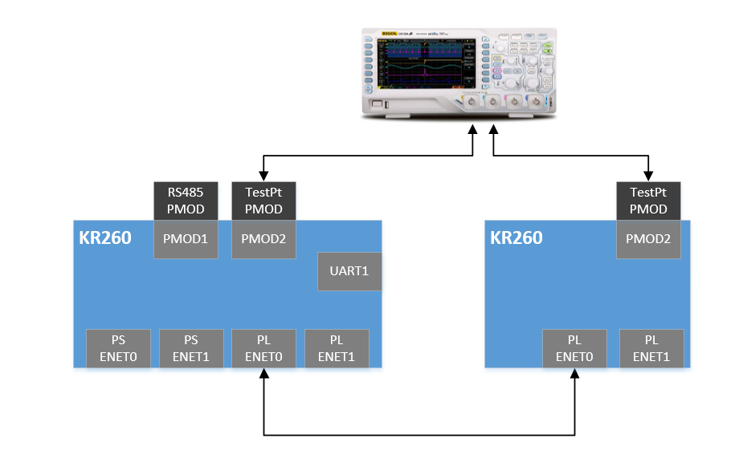
KD240-KD240 Setup:
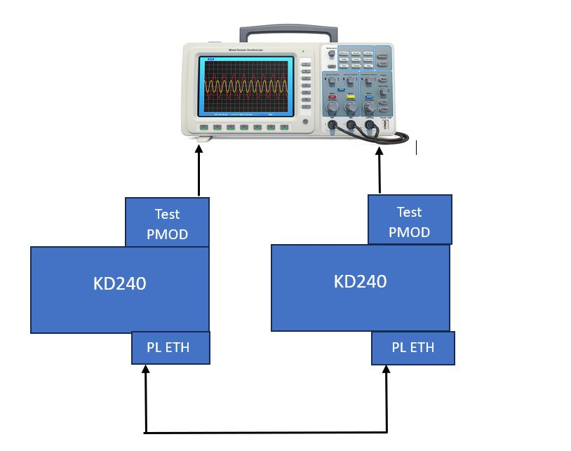
NOTE: For KD240 J24 is PS Eth, J25B top is PL Eth. For KR260 J10D is PS Eth, J10B top is PL Eth
Two KR260 boards: Board setup¶
Connect Ethernet cable from PL ETH1 of Board1 (J10 top of KR260)/(J25B top of KD240) to PL ETH1 of Board2.
Connect JTAG/UART ports of both boards to your PC.
Connect Digilent TPH2 Pmod into the PMOD2 connector on the KR260/KD240 board.
The Analog Discovery 2 or Oscilloscope can be connected to Board1 and Board2 for observing the PTP clock synchronization, Qbv scheduling, and measuring latency.
Power on both the boards with the prebuilt wic image in the sd_card that was prepared in the prerequisite section.
KR260-KR260 Setup
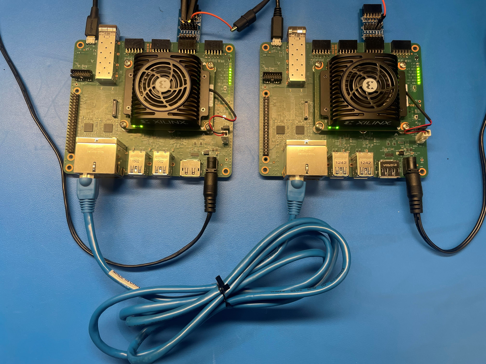
KD240-KD240 Setup
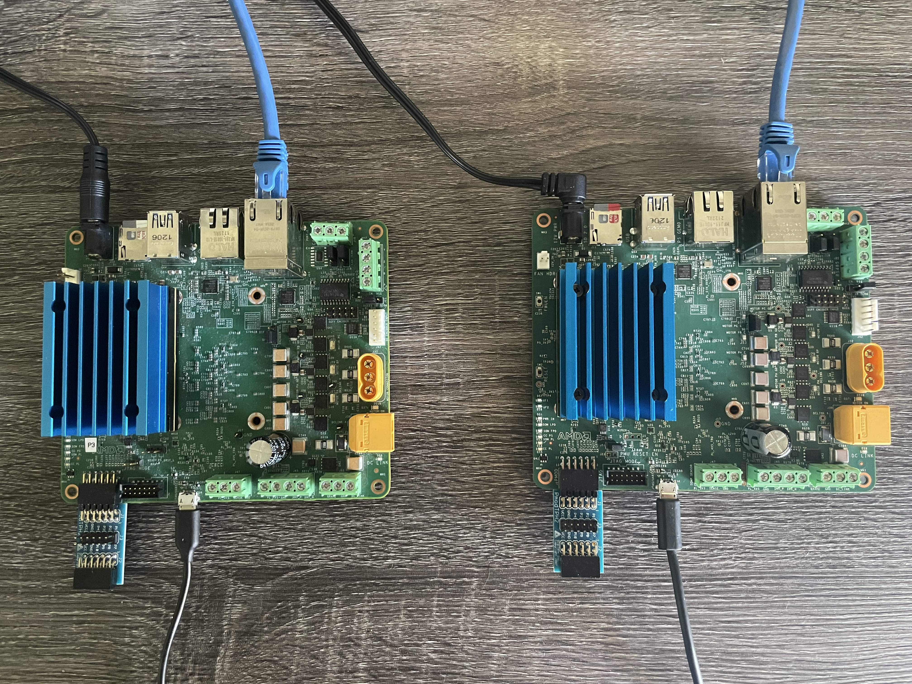
Run TSN-ROS Out of Box Applications¶
Ensure to load the TSN accelerator/firmware (refer to step-7 ‘dynamically load the application package’ from initial setup) before testing example application. If the firmware is already loaded, ignore this step and proceed.
KR260 firmware load command:
sudo xmutil unloadapp sudo xmutil loadapp kr260-tsn-rs485pmodKD240 firmware load command:
sudo xmutil unloadapp sudo xmutil loadapp kd240-motor-ctrl-qeiSetup Ethernet ports by running the following commands on the serial terminal. This sets the MAC/IP/VLAN on the EP and ETH ports of the TSN switch IP.
KR260/KD240 Board1 interface setup
source /usr/bin/net_setup.sh -b1KR260/KD240 Board2 interface setup
source /usr/bin/net_setup.sh -b2Setup ros env on both KR260/KD240 Board 1 & Board2
source /opt/ros/humble/setup.sh
Note: Set MAC filters when using both TSN ethernet ports in the loopback mode. Refer to net_setup.sh script for setting MAC filters.
Network Time Synchronization KR260-KR260 (PTP Demo)¶
In this demo, Board1 sets its clock as master. Board2 is the slave. Board2 clock syncs with Board1 clock after a brief synchronization period. Oscilloscope or Analog Discovery 2 Setup (optional)
Connect P1 on the Test Pmod of Board1 to Channel1 of the oscilloscope - Monitors PTP clock on Board1
Connect P1 on the Test Pmod of Board2 to Channel2 of the oscilloscope - Monitors PTP clock on Board2
There are also additional signals exposed to the test Pmod if you want to observe them with additional oscilloscope channels:
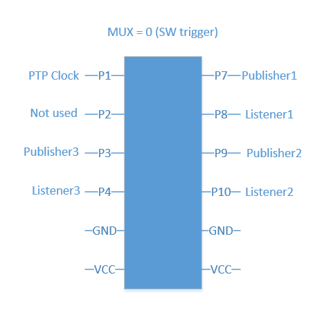
Start ptp on Board1 in master mode
source /usr/bin/start_ptp.sh -mStart ptp on Board2 in slave mode
source /usr/bin/start_ptp.sh -s
Note: Ensure to run PTP master before starting PTP slave as slave fails to sync when the grandmaster clock is not set. The sync takes about 30 seconds to complete.
Observe Results:
The file ptplog saves the ptp4l output on Board2. The rms value starts out high and goes down to a single-digit value showing the clocks are now in sync.
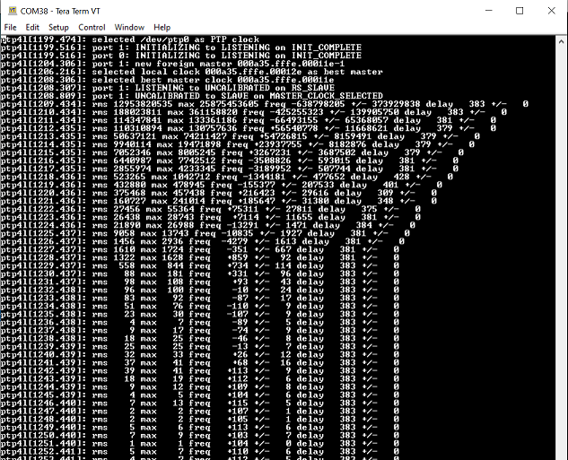
To see the current status of PTP, run the following command:
tail -f .local/log/ptplogUsing an Oscilloscope, or the Analog Discovery 2 and the WaveForms application, the clocks do not start out in sync but begin to sync with each other and this can be observed by the phase alignment between Channel1 and Channel2.
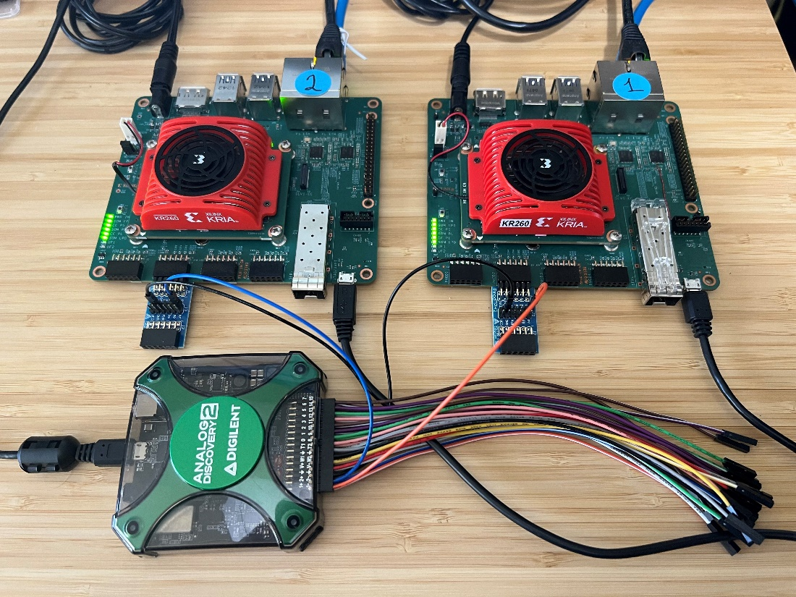
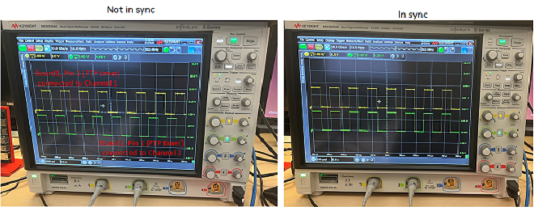
ROS Publisher and Subscriber Demo¶
Start the Subscriber (listener) first on Board2 so that it is ready to receive messages from the Publisher once it has begun sending messages.
source /opt/xilinx/ros-tsn-example/bin/start_ros_test.sh -lStart Publisher (talker) next on Board1 to begin sending messages to boards that are Subscribed to the topic.
source /opt/xilinx/ros-tsn-example/bin/start_ros_test.sh -t
Observe Results
The xlnx-pubsub talker generates a packet of schedule traffic type every second.
The xlnx-pubsub listener prints a message when it receives a packet.

Latency measurement Demo¶
To measure latency, an oscilloscope or Analog Discovery 2 device is required. This demo measures the latency between packet transmitted from Board1 and received on Board2. It includes the latency of the software stack as well.
Oscilloscope or Analog Discovery 2 Setup¶
Connect P7 on the Test PMOD of Board1 to Channel1 of the oscilloscope - Monitors TX packet from Publisher1. Publisher1 can transmit a Scheduled Traffic (ST) packet or a Best effort (BE) packet.
Connect P8 on the Test PMOD of Board2 to Channel2 of the oscilloscope - Monitors RX packet from Listener1. Listener 1 receives a ST packet or BE packet.
Set up triggers on Channel1 and Channel2 with an OR condition and set the time scale interval to 50us.

Figure: Test PMOD pins when MUX is set to SW trigger
The talker application generates a packet, which triggers the Publisher1 pin in the previous figure. When the packet is received on Board2, the listener application triggers the Listener1 pin. Measure the time difference between Channel1 and Channel2 of the scope to find out the latency. It is ideally found to be between 80us to 160us.
Start listener on Board2
source /opt/xilinx/tsn-examples/bin/start_latency_test.sh -lStart talker on Board1 with best effort traffic class
source /opt/xilinx/tsn-examples/bin/start_latency_test.sh -bStart talker on Board1 with scheduled traffic class
source /opt/xilinx/tsn-examples/bin/start_latency_test.sh -sPress Enter key on Board2 to exit the Listener mode.
Observe Results
The next steps measure the time difference between Channel1 and Channel2 of the scope to find out the latency. It is ideally found to be between 80us to 160us. The latency numbers are similar between Best Effort and Scheduled Traffic. If you set the Qbv priority, the latency might increase depending on the order of the slot (BE first or ST first) and Time allotted for each slot.

Note: The latency measurement on the oscilloscope is from a software trigger. This includes the processing time of the processor to read the packet received over the network stack and initiates a trigger signal to the PMOD. When work load on the processor is high, latency measurements could reflect a higher value.
Network Time Shaper Function (802.1Qbv Demo)¶
This demo allots a time slot for scheduled traffic and best effort and it can be visualized on an oscilloscope. For a cycle time period of 1ms, ST traffic is sent for 700us and BE traffic for 300us.
Oscilloscope or Analog Discovery 2 Setup
Connect P8 on the Test PMOD of Board2 to Channel1 of the oscilloscope - ST packet Rx
Connect P10 on the Test PMOD of Board2 to Channel2 of the oscilloscope - BE packet Rx
Set up triggers on Channel1 and Channel2 with an OR condition and set the time scale interval to 1 millisecond.

Board2 listens for packets. On Board1, the application sets up time slots for the traffic classes. It generates packets in continuous mode for both traffic types. The oscilloscope monitors the tlast signal of scheduled packets and best effort packets exposed by the TSN IP.
Start Receive on Board2
source /opt/xilinx/tsn-examples/bin/start_qbv_test.sh -rxStart Transmit on Board1
source /opt/xilinx/tsn-examples/bin/start_qbv_test.sh -txThe talker on Board1 runs for 30 seconds and exits.
Observe Results
The scope shot shows a 70% Scheduled traffic 30 % Best Effort traffic distribution.
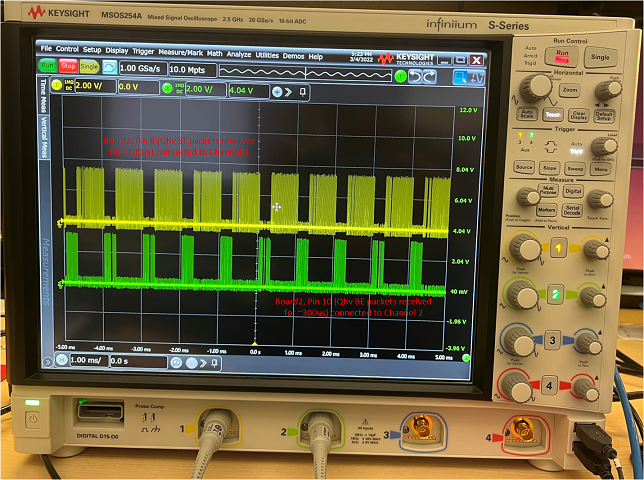
Note: You can also monitor Tlast TX ST (P7) and Tlast TX BE (P9) on Board1, but the distribution is not as clean as the RX because we are monitoring the data going into the TSN IP before it is scheduled to go out on the Ethernet MAC.
No Oscilloscope Setup
No connections to the Pmods are required in this case since the oscilloscope is not used. Instead, the Wireshark application is used to analyze traffic types.
Start Receive mode on Board2 and use tcpdump to begin capturing received packets
source /opt/xilinx/tsn-examples/bin/start_qbv_test.sh -rxsudo tcpdump -i ep -w qbv.pcapStart Transmit mode on Board1
source /opt/xilinx/tsn-examples/bin/start_qbv_test.sh -txThe talker on Board1 runs for 30 seconds and exits automatically.
Exit tcpdump using CTRL-c key combination to end capture on Board2.
Move the qbv.pcap capture file to the SD card located under the /boot directory.
Move the qbv.pcap file from the SD card to the host PC to analyze the packet distribution within Wireshark.
Observe Results
Wireshark trace shows a 70% Scheduled traffic 30 % Best Effort traffic distribution.
Start Wireshark on the host PC. Use the one available under Ubuntu.
wireshark &In the Wireshark GUI, select File → Open → Browse and select the qbv.pcap file.
Observe that there are two sets of packets within the capture, one set with packet length=900, another set with packet length=800, which when plotted against time forms a 70:30 distribution. The packet length is based on the setting from the talker script. Below is an example of lengths 900 and 800 for Scheduled and Best Effort traffic, respectively.
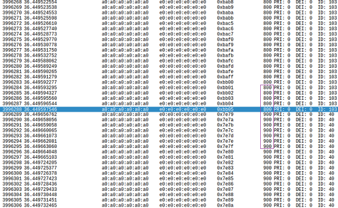
Click on a packet with length=900 bytes and observe the vlan ID=10, Priority (PCP/PRI=4) where a packet with PCP=4 indicates that it is Scheduled traffic.

Click on a packet with length=800 bytes and observe the vlan ID=20, Priority (PCP/PRI=1) where a packet with PCP=1 indicates that it is Best Effort traffic.
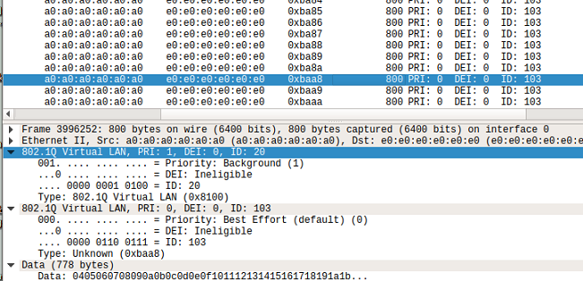
Network Configuration 2 : Network Manager(CNC) and Two KR260/KD240 Boards¶
NOTE: This tutorial can be run with one KD240 and one KR260 configuration as well.
Before running this tutorial please make sure that your curl --version package on the CNC is
7.68.0. Please follow below steps if version does not match:
sudo apt-cache policy curl
sudo apt remove curl
sudo apt install -y --no-install-recommends curl=7.68.0-1ubuntu2.18
This configuration requires either two KR260/KD240 units and one KV260/KR260/KD240 unit(CNC) or two KR260/KD240 units and one Linux Running Machine(CNC). The following images represent these configurations:
Two KR260/KD240 and one KV260/KR260/KD240(CNC):¶
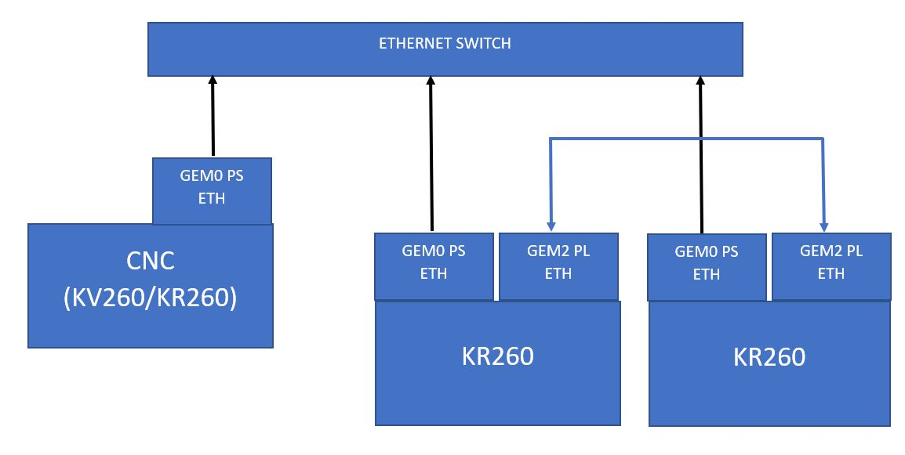
Two KR260/KD240 and one Linux Running Machine(CNC):¶
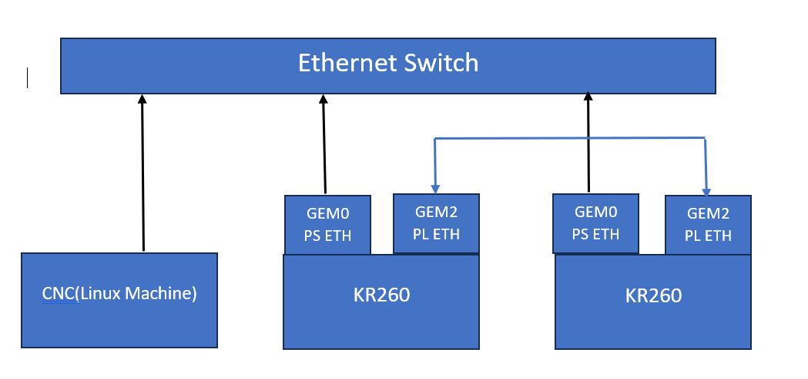
NOTE: For KD240 J24 is PS Eth, J25B top is PL Eth. For KR260 J10D is PS Eth, J10B top is PL Eth
Run TSN-ROS Out of Box Applications¶
Ensure to load the TSN accelerator/firmware (refer to step-7 ‘dynamically load the application package’ from initial setup) before testing example application. If the firmware is already loaded, ignore this step and proceed.
KR260 firmware load command:
sudo xmutil unloadapp sudo xmutil loadapp kr260-tsn-rs485pmodKD240 firmware load command:
sudo xmutil unloadapp sudo xmutil loadapp kd240-motor-ctrl-qeiSetup Ethernet ports by running the following commands on the serial terminal. This sets the MAC/IP/VLAN on the EP and ETH ports of the TSN switch IP.
KR260/KD240 Board1 interface setup
source /usr/bin/net_setup.sh -b1KR260/KD240 Board2 interface setup
source /usr/bin/net_setup.sh -b2
Run Instructions¶
Run parser on the both KR260/KD240 units.
Setup one board as Master and one as Slave. Run the following:
source /usr/bin/network-manager/tsn-parsers/xnm.sh -m & // on Board1/Master source /usr/bin/network-manager/tsn-parsers/xnm.sh -s & // on Board2/Slave
Setup Network Manager
For CNC as KR260/KV260/KD240, install xlnx-tsn-utils package.
sudo add-apt-repository ppa:xilinx-apps sudo apt update sudo apt -y install xlnx-tsn-utilsFor CNC as a Linux Machine, clone and install this repo.
git clone https://github.com/Xilinx/tsn-utils.git cd tsn-utils/tsn-networkmanager sudo make installDiscover the two nodes by pinging them.
ping -c 3 10.0.0.106 //Board1 or Master PING 10.0.0.106 (10.0.0.106) 56(84) bytes of data. 64 bytes from 10.0.0.106: icmp_seq=1 ttl=64 time=0.242 ms 64 bytes from 10.0.0.106: icmp_seq=2 ttl=64 time=0.200 ms 64 bytes from 10.0.0.106: icmp_seq=3 ttl=64 time=0.203 ms --- 10.0.0.106 ping statistics --- 3 packets transmitted, 3 received, 0% packet loss, time 2047ms rtt min/avg/max/mdev = 0.200/0.215/0.242/0.019 ms ping -c 3 10.0.0.208 //Board2 or Slave PING 10.0.0.208 (10.0.0.208) 56(84) bytes of data. 64 bytes from 10.0.0.208: icmp_seq=1 ttl=64 time=0.242 ms 64 bytes from 10.0.0.208: icmp_seq=2 ttl=64 time=0.200 ms 64 bytes from 10.0.0.208: icmp_seq=3 ttl=64 time=0.203 ms --- 10.0.0.208 ping statistics --- 3 packets transmitted, 3 received, 0% packet loss, time 2047ms rtt min/avg/max/mdev = 0.200/0.215/0.242/0.019 ms
Run the CNC setup script from the install location to create/modify nodes:
sudo /usr/bin/network-manager/xcnc_setup
If a node is not already created, navigate through the options and create two new nodes using Master’s and Slave’s MAC Address(eth1).
#Example ubuntu@kria:~$ sudo /usr/bin/network-manager/xcnc_setup Hi! Welcome to the TSN Network Management Engine Please choose one of the options below: Option 1: Create new node Option 2: Modify existing node Option 3: Show current nodes Option 4: Exit Please enter a number: 1 Please enter the node's MAC address 00:0a:35:10:37:fa //Board1 or Master Creating new node Please choose one of the options below: Option 1: Create new node Option 2: Modify existing node Option 3: Show current nodes Option 4: Exit Please enter a number: 1 Please enter the node's MAC address 00:0a:35:10:39:c2 //Board2 or Slave Creating new node Please choose one of the options below: Option 1: Create new node Option 2: Modify existing node Option 3: Show current nodes Option 4: Exit Please enter a number: 2 Nodes currently added: node_000a351037fa //Board1 or Master node_000a351039c2 //Board2 or SlaveNote: Do not exit and follow next steps.
On CNC, set qbv configs for swp0 for Board1/Master(70% Scheduled traffic and 30% Best Effort traffic)
cycle_time in to be entered nS. Max cycle time is 1sec.
cycle start time. Should be ‘0,’ which starts traffic as soon as the talker is running.
gate list length can have MAX 256 entries. (gate list length > 0).
time for gate list entry to be entered in nS, should not be more the 8000000nS. Sets the time for which gate-state-value that is set will occupy (time > 0).
# Example ubuntu@kria:~$ sudo /usr/bin/network-manager/xcnc_setup Hi! Welcome to the TSN Network Management Engine Please choose one of the options below: Option 1: Create new node Option 2: Modify existing node Option 3: Show current nodes Option 4: Exit Please enter a number: 2 Please enter the node's MAC address 00:0a:35:10:37:fa //Board1 or Master /etc/tsn-networkmanager/node_000a351037fa Qbv/fdb? qbv Enter the switch port whose qbv schedule needs to be modified: swp0 Enter cycle time in nanoseconds, Maximum cycle time is 1 sec 1000000 Enter cycle start time (base time) 0 Enter gate list length: 2 Entry 1 To open BE use state : 1 To open ST use state : 4 To open RES use state : 2 Open both ST & BE state: 5(1+4) Enter gate state value 4 Enter time for the gate list entry 700000 Entry 2 To open BE use state : 1 To open ST use state : 4 To open RES use state : 2 Open both ST & BE state: 5(1+4) Enter gate state value 1 Enter time for the gate list entry 300000 10.0.0.106 ether 00:0a:35:10:37:fa C eth0 Sending /etc/tsn-networkmanager/node_000a351037fa/node_000a351037fa_qbv.json curl -T /etc/tsn-networkmanager/node_000a351037fa/node_000a351037fa_qbv.json tftp://10.0.0.106 % Total % Received % Xferd Average Speed Time Time Time Current Dload Upload Total Spent Left Speed 100 9374 0 0 100 9374 0 767k --:--:-- --:--:-- --:--:-- 767k 100 9374 0 0 100 9374 0 746k --:--:-- --:--:-- --:--:-- 746kNote: Do not exit and set fdb configs.
On CNC, set fdb configs for both the nodes.
While creating “fdb,” configs destmac should be “e0:e0:e0:e0:e0:e0”, vlan ID should be 10, port should be swp1 for Master configs, and swp0 for Slave configs.
# Example configs for Board1/Master ubuntu@kria:~$ sudo /usr/bin/network-manager/xcnc_setup Hi! Welcome to the TSN Network Management Engine Please choose one of the options below: Option 1: Create new node Option 2: Modify existing node Option 3: Show current nodes Option 4: Exit Please enter a number: 2 Nodes currently added: node_000a351037fa //Board1 or Master node_000a351039c2 //Board2 or Slave Please enter the node's MAC address 00:0a:35:10:37:fa //Board1 or Master /etc/tsn-networkmanager/node_000a351037fa Qbv/fdb? fdb Please enter a destination MAC address for the CAM entry e0:e0:e0:e0:e0:e0 Please enter a vlan ID(s)/range of vlan's for the CAM Entry 10 Please specify destination switch port/s: swp0: 3, swp1: 1, swp2: 2 Multiple ports can be specified using a comma separated string 1 Static CAM entry added locally, Want to add more entries [Y/N]? If you enter N/n, device will be programmed immediately n 10.0.0.106 ether 00:0a:35:10:37:fa C eth0 Sending /etc/tsn-networkmanager/node_000a351037fa/node_000a351037fa_fdb.json curl -T /etc/tsn-networkmanager/node_000a351037fa/node_000a351037fa_fdb.json tftp://10.0.0.106 % Total % Received % Xferd Average Speed Time Time Time Current Dload Upload Total Spent Left Speed 100 2574 0 0 100 2574 0 440k --:--:-- --:--:-- --:--:-- 440k 100 2574 0 0 100 2574 0 414k --:--:-- --:--:-- --:--:-- 414k # Example configs for Board2/Slave ubuntu@kria:~$ sudo /usr/bin/network-manager/xcnc_setup Hi! Welcome to the TSN Network Management Engine Please choose one of the options below: Option 1: Create new node Option 2: Modify existing node Option 3: Show current nodes Option 4: Exit Please enter a number: 2 Nodes currently added: node_000a351037fa //Board1 or Master node_000a351039c2 //Board2 or Slave Please enter the node's MAC address 00:0a:35:10:39:c2 //Board1 or Master /etc/tsn-networkmanager/node_000a351037fa Qbv/fdb? fdb Please enter a destination MAC address for the CAM entry e0:e0:e0:e0:e0:e0 Please enter a vlan ID(s)/range of vlan's for the CAM Entry 10 Please specify destination switch port/s: swp0: 3, swp1: 1, swp2: 2 Multiple ports can be specified using a comma separated string 3 Static CAM entry added locally, Want to add more entries [Y/N]? If you enter N/n, device will be programmed immediately n 10.0.0.208 ether 00:0a:35:10:39:c2 C eth0 Sending /etc/tsn-networkmanager/node_000a351037fa/node_000a351037fa_fdb.json curl -T /etc/tsn-networkmanager/node_000a351037fa/node_000a351037fa_fdb.json tftp://10.0.0.208 % Total % Received % Xferd Average Speed Time Time Time Current Dload Upload Total Spent Left Speed 100 2574 0 0 100 2574 0 440k --:--:-- --:--:-- --:--:-- 440k 100 2574 0 0 100 2574 0 414k --:--:-- --:--:-- --:--:-- 414kNote: Exit after setting fdb configs.
Run Traffic
Verify if the schedule is set for ep(swp0) on Board1/Master.
sudo qbv_sched -g ep List length: 2 Cycle time: 1000000 Base time: 1684277666s 0ns List 0: Gate State: 4 Gate Time: 700000ns List 1: Gate State: 1 Gate Time: 300000ns
Start talker on Board1/Master
sudo tsn_talker -n -1 -l 900 -v 10 -p 4 & //for ST Traffic sudo tsn_talker -n -1 -l 900 -v 10 -p 1 & //for BE Traffic
Start capture of received packets on Board2/Slave
sudo tcpdump -i ep -w qbv.pcap -vvv tcpdump: listening on ep, link-type EN10MB (Ethernet), snapshot length 262144 bytes ^C696566 packets captured 768225 packets received by filter 71379 packets dropped by kernel
Note: Packet count should increment quickly as soon as you run the tcpdump command.
Exit out of tcpdump after a few seconds using the CTRL-c key combination to end capture on Board2.
qbv.pcap file saved in the current directory shows packet distribution.
Move the qbv.pcap file from the SD card to the host PC to analyze the packet distribution within Wireshark.
Kill talker on Board1/Master
sudo killall tsn_talker
Analyze the packet distribution on wireshark
Wireshark trace shows a 70% Scheduled traffic 30 % Best Effort traffic distribution
Start Wireshark on the host PC
# For Linux wireshark &
For Windows, download Wireshark.
In the Wireshark GUI, select File → Open → Browse and select the qbv.pcap file.
Observe that there are packets within the capture, with packet length=900 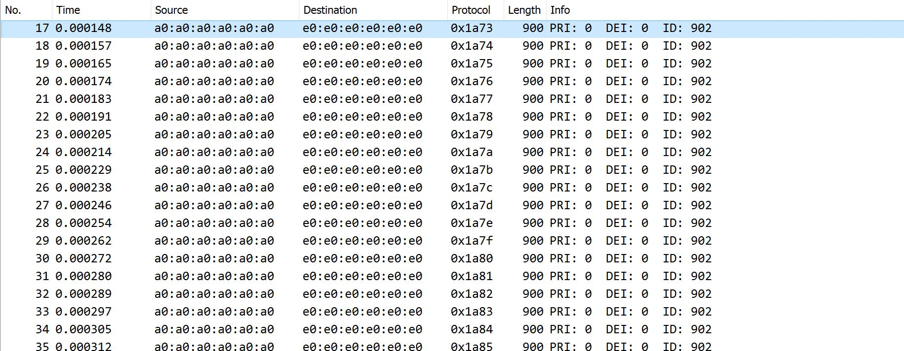.
Type the filter as ‘vlan.priority == 4’ in “Apply display filter” in Wireshark.
Click on a packet and observe the vlan ID=10, Priority (PCP/PRI=4) where a packet with PCP=4 indicates it is Scheduled traffic 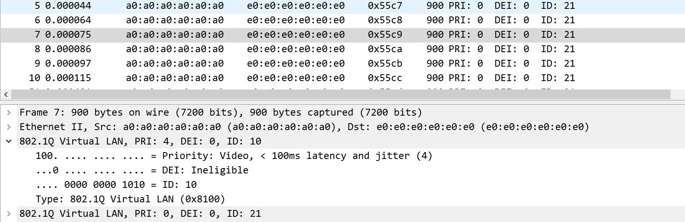.
Select the following from Wireshark Tab Statistics -> Capture File Properties. You can see ~70% distribution for ST traffic 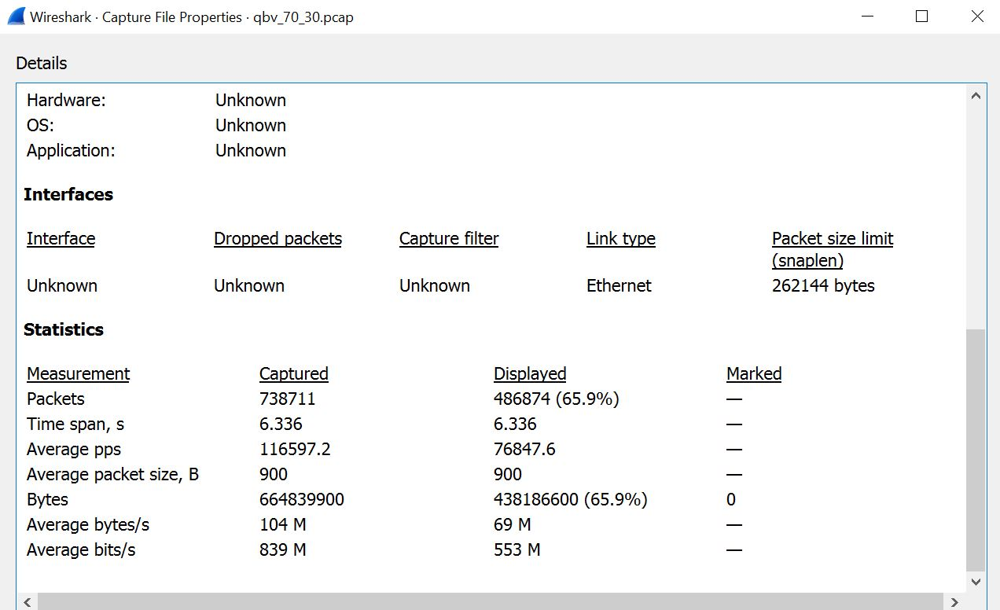.
Type the filter as ‘vlan.priority == 1’ in “Apply display filter” in Wireshark.
Click on a packet and observe the vlan ID=4, Priority (PCP/PRI=1) where a packet with PCP=1 indicates it is Best Effort traffic 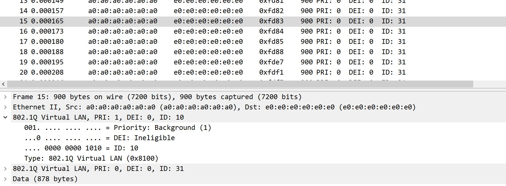.
Select the following from Wireshark Tab Statistics -> Capture File Properties. You can see ~30% distribution for BE traffic 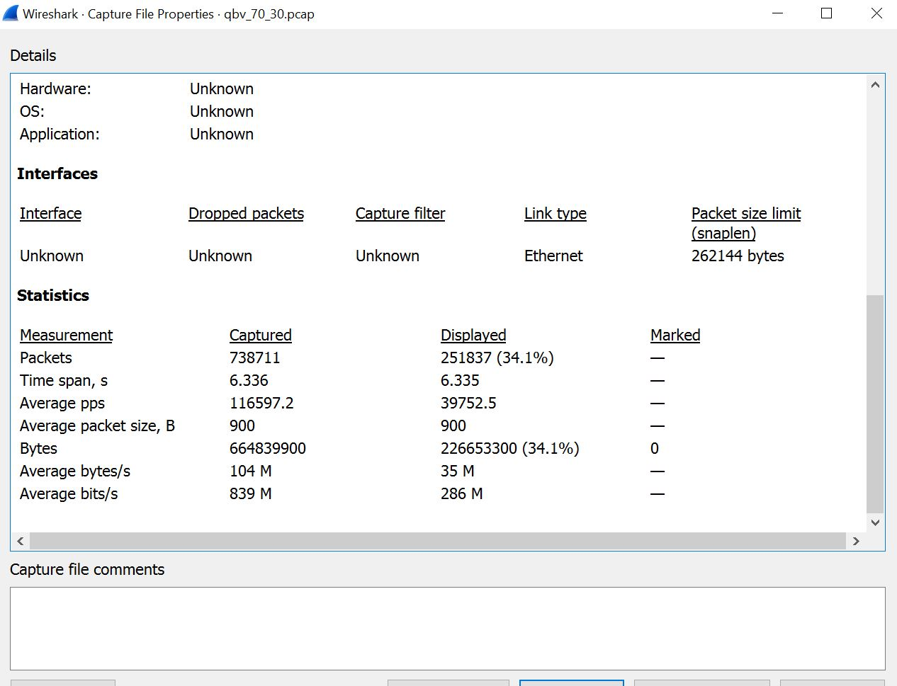.
Notice frame-premption - Optional(if preemption was enabled)
On CNC, set qbv configs for swp0 for Master(70% Mixed traffic and 30% Scheduled traffic)
cycle_time in to be entered nS. Max cycle time is 1sec.
cycle start time. Should be ‘0,’ which starts traffic as soon as the talker is running.
gate list length can have MAX 256 entries. (gate list length > 0).
time for gate list entry to be entered in nS, should not be more the 8000000nS. Sets the time for which gate-state-value that is set will occupy (time > 0).
# Example ubuntu@kria:~$ sudo /usr/bin/network-manager/xcnc_setup Hi! Welcome to the TSN Network Management Engine Please choose one of the options below: Option 1: Create new node Option 2: Modify existing node Option 3: Show current nodes Option 4: Exit Please enter a number: 2 Please enter the node's MAC address 00:0a:35:10:37:fa /etc/tsn-networkmanager/node_000a351037fa Qbv/fdb? qbv Enter the switch port whose qbv schedule needs to be modified: swp0 Enter cycle time in nanoseconds, Maximum cycle time is 1 sec 1000000 Enter cycle start time (base time) 0 Enter gate list length: 2 Entry 1 To open BE use state : 1 To open ST use state : 4 To open RES use state : 2 Open both ST & BE state: 5(1+4) Enter gate state value 5 Enter time for the gate list entry 700000 Entry 2 To open BE use state : 1 To open ST use state : 4 To open RES use state : 2 Open both ST & BE state: 5(1+4) Enter gate state value 4 Enter time for the gate list entry 300000 10.0.0.106 ether 00:0a:35:10:37:fa C eth0 Sending /etc/tsn-networkmanager/node_000a351037fa/node_000a351037fa_qbv.json curl -T /etc/tsn-networkmanager/node_000a351037fa/node_000a351037fa_qbv.json tftp://10.0.0.106 % Total % Received % Xferd Average Speed Time Time Time Current Dload Upload Total Spent Left Speed 100 9374 0 0 100 9374 0 767k --:--:-- --:--:-- --:--:-- 767k 100 9374 0 0 100 9374 0 746k --:--:-- --:--:-- --:--:-- 746kVerify if the schedule is set for ep(swp0) on Board1/Master
sudo qbv_sched -g ep List length: 2 Cycle time: 1000000 Base time: 1684357652s 0ns List 0: Gate State: 3 Gate Time: 700000ns List 1: Gate State: 4 Gate Time: 300000ns
Start listener on Board2/Slave
sudo tsn_listener &
Start talker on Board1/Master
sudo tsn_talker -n -1 -l 900 -v 10 -p 4 & sudo tsn_talker -n -1 -l 1200 -v 10 -p 1 &
Kill listener/talker after a few seconds
sudo killall tsn_listener //Board2 sudo killall tsn_talker //Board1
Check the ethtool stats
# Board1 ethtool --include-statistics --show-mm eth2 MAC Merge layer state for eth2: pMAC enabled: on TX enabled: on TX active: on TX minimum fragment size: 60 RX minimum fragment size: 60 Verify enabled: on Verify time: 127 Max verify time: 127 Verification status: SUCCEEDED Statistics: MACMergeFrameAssErrorCount: 0 MACMergeFrameSmdErrorCount: 3 MACMergeFrameAssOkCount: 0 MACMergeFragCountRx: 0 MACMergeFragCountTx: 13808 MACMergeHoldCount: 1 # Board2 ethtool --include-statistics --show-mm eth2 MAC Merge layer state for eth2: pMAC enabled: on TX enabled: on TX active: on TX minimum fragment size: 60 RX minimum fragment size: 60 Verify enabled: on Verify time: 127 Max verify time: 127 Verification status: SUCCEEDED Statistics: MACMergeFrameAssErrorCount: 0 MACMergeFrameSmdErrorCount: 10 MACMergeFrameAssOkCount: 13488 MACMergeFragCountRx: 13808 MACMergeFragCountTx: 0 MACMergeHoldCount: 0
Note: MACMergeFragCountTx on board1/master and MACMergeFragCountRx on board2/slave should match on both sides.
Enable frame Preemption - Optional¶
Check the current status.
ethtool --include-statistics --show-mm eth2 //KR260 ethtool --include-statistics --show-mm eth1 //KD240
Note: Verify pMAC enabled: on. This means preemption is available. TX Enable and Active will be off at this point as boards are not communicating yet.
Restart lldpad service
sudo systemctl restart lldpad
Enable transmit capabilities
# KR260 commands sudo lldptool -i eth2 set-lldp adminStatus=rxtx sudo lldptool -i eth2 set-tlv -V addEthCaps enableTx=yes # KD240 commands sudo lldptool -i eth1 set-lldp adminStatus=rxtx sudo lldptool -i eth1 set-tlv -V addEthCaps enableTx=yes
Note: Now TX Enable and Active should be ON automatically on both sides.
Check status
ethtool --include-statistics --show-mm eth2 //KR260 ethtool --include-statistics --show-mm eth1 //KD240
Note: Notice TX Enable and TX Active are “on” now. Once preemption is enabled, it remains enabled on subsequent reboot as the configuration is stored in lldpad.conf. Delete
/var/lib/lldpad/lldpad.confto reset the configuration.
Network Configuration 3 : KR260/KD240 and PC Workstation¶
A single KR260/KD240 board communicating with a PC workstation capable of TSN networking. The PC workstation is using an I210 Ethernet Controller interface card to demonstrate functionality and features of TSN.
KR260/KD240 and PC Workstation: Board Setup¶
Insert the microSD card containing the boot image into the microSD card slot (J11) on the Starter Kit.
Connect JTAG/UART port (J4) of the KR260 carrier board to the development PC.
Connect the TPH2 Pmod to the PMOD2 expansion connector (J18) of the KR260 carrier board.
Connect Ethernet cable from PL ETH1 (J10 top for KR260)/(J25B top for KD240) Carrier Board to Intel I210 NIC Ethernet port of the Linux host machine.
Connect Power Supply to the 12V PWR DC barrel jack (J12) on the KR260/KD240 carrier board.
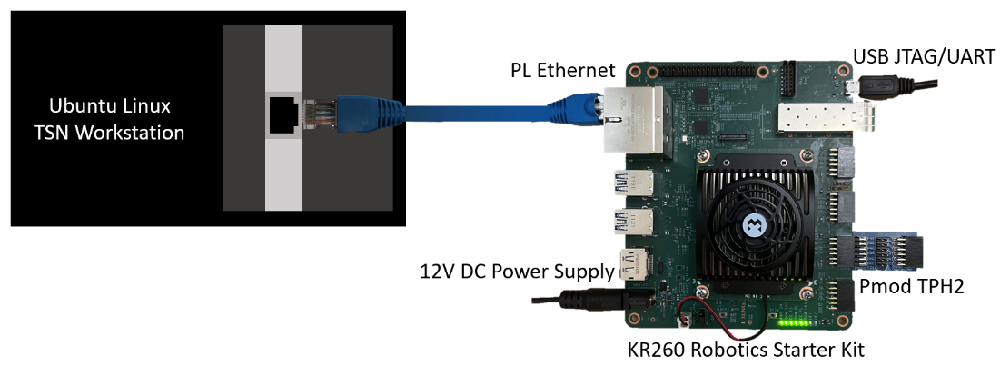
Ensure to load the TSN accelerator/firmware (refer to step-7 ‘dynamically load the application package’ from initial setup) before testing example application. If the firmware is already loaded, ignore this step and proceed.
KR260 firmware load command:
sudo xmutil unloadapp sudo xmutil loadapp kr260-tsn-rs485pmodKD240 firmware load command:
sudo xmutil unloadapp sudo xmutil loadapp kd240-motor-ctrl-qeiSetup Ethernet port on the target KR260/KD240 board by running the following commands within the USB-UART connected serial terminal, this sets the MAC/IP/VLAN on the EP and ETH port of the TSN switch IP.
source /usr/bin/net_setup.sh -b2
Workstation Configuration
The TSN networking interface (I210 interface) on the Linux host workstation must be brought up and linuxptp needs to be installed to demonstrate PTP. To do this, on the Linux workstation, use
sudo ifconfig <i210 interface> upcommand as shown in this example usage:sudo ifconfig enp2s0 upInstall ptpt4l on Workstation
sudo apt install -y linuxptp
Network Time Synchronization Workstation-KR260/KD240 (PTP Demo)¶
In this demo, KR260/KD240 sets its clock as slave and the Linux host workstation serves as the clock master. The KR260/KD240 clock syncs with the Linux host workstation clock after a brief synchronization period.
Using a text editor on the Linux TSN host workstation, create a new ptp4l configuration file with the following settings needed to launch ptp4l as the network clock master.
[global]
transportSpecific 1
priority1 248
priority2 249
ptp_dst_mac 01:80:C2:00:00:0E
p2p_dst_mac 01:80:C2:00:00:0E
logAnnounceInterval 1
logSyncInterval -3
follow_up_info 1
announceReceiptTimeout 3
syncReceiptTimeout 3
neighborPropDelayThresh 800
min_neighbor_prop_delay -20000000
network_transport L2
delay_mechanism P2P
tx_timestamp_timeout 10
Start ptp4l on the Linux TSN host workstation and specify
sudo ptp4l -P -2 -H -i <i210 interface> -m -f ptp4l_master.conf >& ptplog &sudo ptp4l -P -2 -H -i enp2s0 -p /dev/ptp1 -m -f ptp4l_master.conf >& ptplog &
Note: In cases where there is more than one PTP device available, specify which one is to be used with the -p argument as shown in the following example usage:
Start ptp on KR260/KD240 in slave clock mode
source /usr/bin/start_ptp.sh -s
Note: Ensure to run the ptp master before starting ptp slave as slave fails to sync when the grandmaster clock is not set. The sync takes about 30 seconds to complete.
Observe Results
The file ptplog contains the saved ptp4l output to the file system on KR260/KD240. The rms value starts out high and trend downward to a single-digit value showing that the clocks are now in sync.

To see the current status of PTP, run the following command to exit log view when finished.
tail -f .local/log/ptplog
Network Time Shaper Function (other 802.1Qbv Demo)¶
This demo allots a time slot for Scheduled Traffic (ST) and Best Effort (BE) traffic and it can be visualized on an oscilloscope. For a cycle time period of 1ms, ST traffic is sent for 700us and BE traffic for 300us. Wireshark on the Linux host workstation listens for packets. On the KR260 board, the application sets up time slots for the traffic classes. Packets are generated in continuous mode for both traffic types. Wireshark monitors the incoming packets for scheduled and best-effort traffic exposed by the TSN IP.
An oscilloscope or Analog Discovery 2 device can also be used to monitor Tlast Tx ST (P7) and Tlast Tx EP (P9) on KR260/KD240 board to view the distribution. Oscilloscope Setup (optional)
Connect P7 on the Test Pmod of KR260 to Channel1 of the oscilloscope - Tlast Tx ST
Connect P9 on the Test Pmod of KR260 to Channel2 of the oscilloscope - Tlast Tx EP
Set up triggers on Channel1 and Channel2 with an OR condition and set the time scale interval to 1 millisecond:
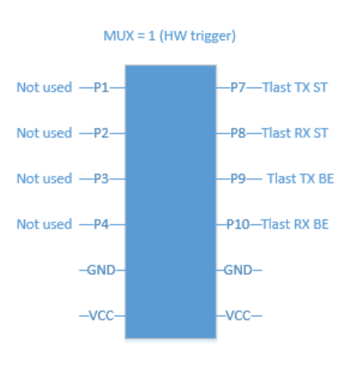
The Analog Discovery 2 can be connected to KR260 using these connections for observing the scheduled traffic:
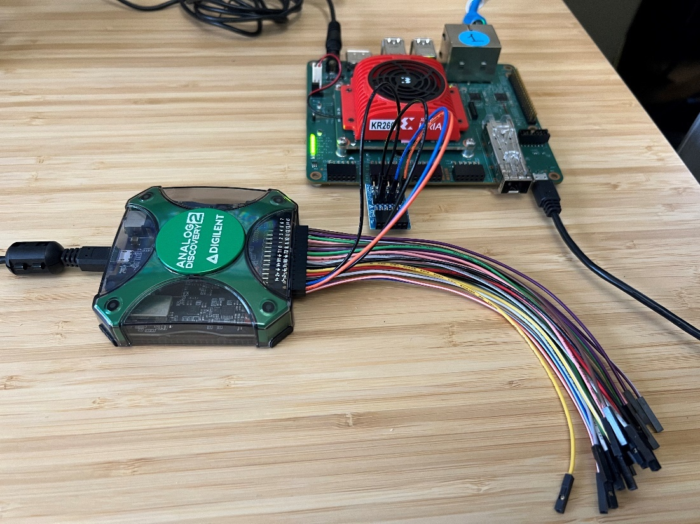
Start Wireshark on the Linux host machine and select I210 interface to see traffic data
wireshark &Start transmitting packets from the KR260 board
source /opt/xilinx/tsn-examples/bin/start_qbv_test.sh -txThe talker on KR260 runs for 30 seconds and exits automatically
Observe Results
The scope shot shows an approximate Scheduled traffic (Channel 1 yellow) and Best Effort traffic (Channel 2 green) distribution.
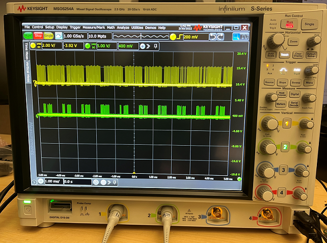
Note: The distribution will not be clean because this is monitoring the data going into the TSN IP before it is scheduled to go out on the Ethernet MAC.
Observe that there are two sets of packets within the capture, one set with packet length=900, another set with packet length=800.
Click on a packet with length=900 bytes and observe the vlan ID=10, Priority (PCP/PRI=4) where a packet with PCP=4 indicates it is Scheduled traffic.
Click on a packet with length=800 bytes and observe the vlan ID=20, Priority (PCP/PRI=1) where a packet with PCP=1 indicates it is Best Effort traffic.
Wireshark trace shows a traffic distribution of 70% Scheduled traffic and 30% Best Effort traffic.
Communication using RS485¶
The K26 SOM has the capability to perform as an advanced and highly integrated gateway for legacy industrial networking protocols (those using RS485/Modbus) to more modern industrial networking infrastructure (such as TSN) and this application serves as an example of how to interface to a remote temperature sensor for capturing data. This is analogous to integrating in legacy, but still functional, capital equipment to reduce total replacement costs within factory retrofits and technology upgrades.
NOTE: This test is not applicable for KD240 via PMOD-RS485
RS485: Board Setup¶
KR260:
Connect the Pmod RS485 to the PMOD1 expansion connector (J2) of the KR260 carrier board. Be sure to connect this to the bottom row of pins (ones labeled 2,4,6,8,10, and 12) since the module is a 1x6 header connecting to a 2x6 connector on KR260.

Connect the Temperature sensor and PMOD RS485 using prototyping wire (18 AWG works well) as shown in the following figure:

Connect a 12 VDC supply to power the RS485 temperature sensor using GND and VIN terminals.
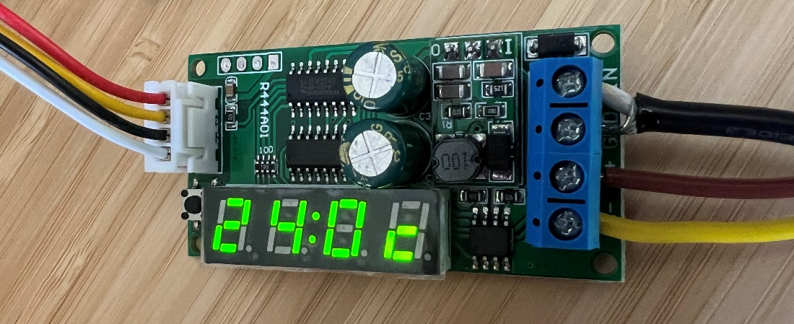
Connect Power Supply to the 12V PWR DC barrel jack (J12) on the KR260 carrier board.
KD240:
Connect the RS485 Temperature and Humidity sensor as below on the J22 Connector on the KD240. Obtain a separate 12V power supply to connect the two loose jumpers as shown in the following image, one to GND(black wire in image) and the other to 12V Supply (white wire in image).
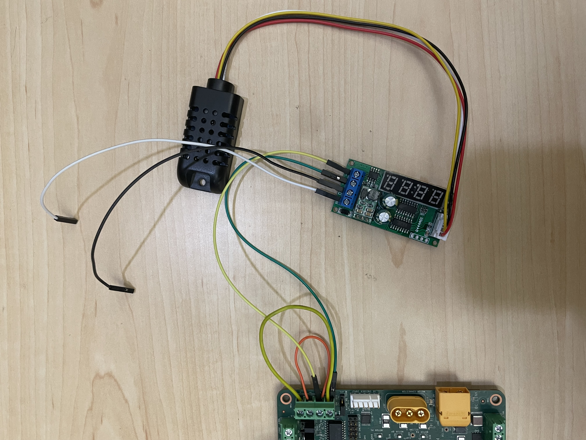
Connect the Temperature and humidity sensor to the J22 euromag connector as shown below

RS485 Temperature/Humidity Sensor Demo¶
In this demo, the pmod-test application probes the temperature sensor connected and displays the captured values on the serial terminal.
Ensure to load the TSN accelerator/firmware (refer to step-7 ‘dynamically load the application package’ from initial setup) before testing example application. If the firmware is already loaded, ignore this step and proceed.
KR260 firmware load command:
sudo xmutil unloadapp sudo xmutil loadapp kr260-tsn-rs485pmodKD240 firmware load command:
sudo xmutil unloadapp sudo xmutil loadapp kd240-motor-ctrl-qeiProbe sensor via RS485 interface.
Execute binary:
KR260 command -
pmod-rs485-testKD240 command -
pmod-rs485-test /dev/ttyPS0
Observe Results
The output on the serial terminal should match the value displayed on the seven-segment LED display of the sensor.

Note: Occasionally, erroneous values (for example 3276.8) are reported for temperature/humidity sensor data and this is due to error in the sensor itself, which can be ignored and the test reruns to clear the error.
reg[0]=32768 (0x8000) reg[1]=32768 (0x8000) Temperature: 3276.8 Deg C Humidity: 3276.8 %For reference, here is the register map of the sensor: 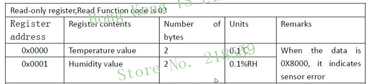
Known issues¶
Following known issues and their remedies that can be encountered and implemented while testing the above application.
Repeated broadcast on ping
PTP timeouts with heavy traffic
For the above two issues, refer to the documentation provided under the section “Known issues and troubleshooting” from the AMD TSN solution wiki page here.